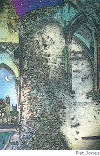

Rhina P. Espaillat
In Stone
Learn, as you read me, stranger,
how danger
surrounds every delight,
how night
from which none can wake you
will take you
and memory forsake you,
as you, just now, are turning
from old inscriptions, learning
how danger, how night, will take you.
[ Ovillejo ] [ From Rehearsing Absence, University of Evansville Press, 2001 ]
Lighthouse, with Poet Brandishing His Hat
— for Alfred Dorn
This is the poet posing, hat in hand,
not as a beggar may when thanks are due
to charitable strangers passing by,
but as a champion in the ring may stand
brandishing laurels; it’s a jaunty cue
the crowd responds to, raising heaven-high
the tribute of its hoarse, frenetic cry.
Behind the poet, shouldering the blue
pavilions of the air, the lighthouse peers
over the bard, as if to say, I, too,
rally the fearful, like this firebrand,
to dare the monsters born of wordless fears.
For every passing craft I lift, like cheers,
my wreath of light above the darkened strand.
[ Mason sonnet ]
Rhina P. Espaillat was born in the Dominican Republic and writes in English and in her native Spanish. She also translates, most notably the work of St. John of the Cross into English, and Robert Frost into Spanish. She lives in Newburyport, Massachusetts, with her sculptor husband, Alfred Moskowitz. Her most recent poetry books published in the U. S. in English alone are The Shadow I Dress In (2004) and Playing at Stillness (2005). Her awards include the T. S. Eliot Prize in Poetry, the Wilbur Award, the Howard Nemerov Sonnet Award (twice), three of the yearly prizes given by the Poetry Society of America, several from the New England Poetry Club, the Robert Frost Foundation’s “Tree at My Window” Award, and several national awards from the Dominican Republic’s Ministry of Culture, among others.
|